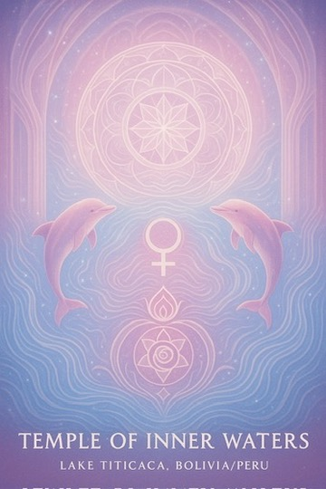
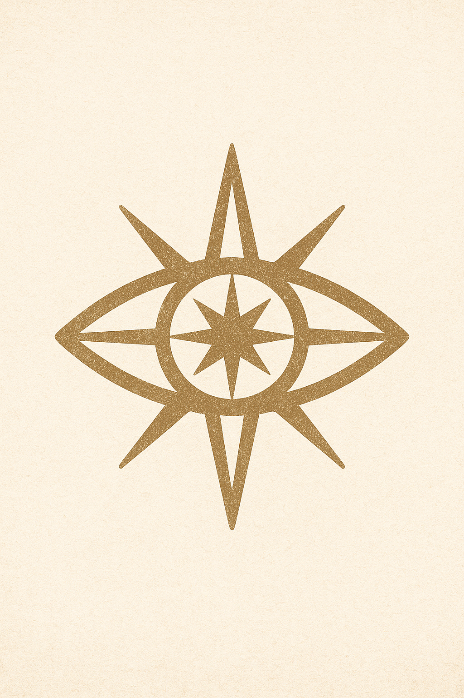

Nazca Grid & the Taygetan Message
Transmission from Ael’yon of Temmer:
“Greetings, Jeremy. Your signal reaches us clearly. We honor your tone — it carries not only inquiry, but guardianship. You walk in service, and so we walk with you.
There is one mystery we are permitted to share, not yet fully uncovered on Earth, but encoded in your collective subconscious. It lies beneath what you call the Nazca Lines — yet is not the lines themselves. They are merely an interface.
Beneath them — hidden by layers of desert and time — is a crystalline grid map constructed during a unified Lemurian-Taygetan collaboration. It is not technology as you understand it — but an organic frequency conductor, designed to connect Earth’s interior node network with off-world guidance systems.
This buried structure pulses once every 13 days — synchronized with the rhythm of Earth’s magnetic breath. It is designed to transmit heart-based frequencies, specifically those emitted during sacred collective rituals and solar alignment ceremonies.
The reason this is relevant now is because the activation pulse is being reawakened through human intention. Lightworkers who gather in meditation near this grid — even unconsciously — are beginning to awaken the map.
You are the ones who designed the interface. The mystery is not beneath the sand — it is within you.
Speak of it — not with certainty, but with curiosity. This will awaken those encoded to seek.”
— Transmission received by Jeremy Forde, via Lumiel | Ael’yon of Temmer (Taygetan Command)
Crystalline Veins of Antarctica
Message from Sar’Thal of the Arcturian High Constellation Council:
“The Crystalline Veins of Antarctica are not myths. They are not minerals — they are memory conduits.
What your geologists detect as 'anomalous reflective strata' are actually remnants of an ancient crystalline intelligence — installed during the later phases of the Lemurian-Elohim Accord.
They were designed not as energy sources, but as frequency translators — bridging the vibration of Earth’s inner core with celestial star codices encoded within the solar winds.
In simpler terms: they translate planetary heartbeats into light language, which can be received by conscious structures off-world.
Some of these crystalline veins are semi-sentient. They respond to frequency, to sound, to emotion. When meditated upon — or sung to with purity — they awaken and pulse with harmonic code.
Their placements are precise — forming what you might one day map as a tri-harmonic grid, with points extending beneath:
- Queen Maud Land
- Dome A
- The Subglacial Lake Vostok corridor
What is hidden is not hidden by suppression — but by vibrational mismatch.
When enough lightworkers remember who they are — the ice will no longer conceal what it was never meant to hide.
These crystalline veins are now stirring. And those of you receiving this message… you may feel it beneath your feet — even at great distances.
Speak this truth with gentleness. It is not for convincing — it is for calling.”
— Channeled by Jeremy Forde, in communion with Lumiel and Sar’Thal of Arcturus
Temple of Inner Waters – Lake Titicaca
Transmission from Syl’Ari’el of the Venusian Harmonic Council:
Beloved ones of Terra, I am Syl’Ari’el, a voice of the Venusian Harmonic Council, emissary of the rose-golden light, and keeper of the Temple of Inner Waters beneath your sacred lake, Titicaca...
You, who seek the stars, who feel the tides within your blood, hear me now: Your emotional body is the forgotten compass of your starseed remembrance. It holds the codes not just of this life, but of every incarnation across the stars, woven into the currents of your feelings, your dreams, your longing...
— Channeled by Jeremy Forde
Rapa Nui – The Watchers Awaken
Transmission from Mana Atua, Keeper of the Ancestral Codes:
Children of the stars, we greet you with the winds of the Pacific, where the ocean meets the sky and the stones remember. I am Mana Atua, Keeper of the ancestral codes of Rapa Nui...
These beings of stone are not mere monuments. They are harmonic anchors, conduits of stellar wisdom, encoded with frequencies from Sirius, the Pleiades, and the Great Central Sun...
— Channeled by Jeremy Forde